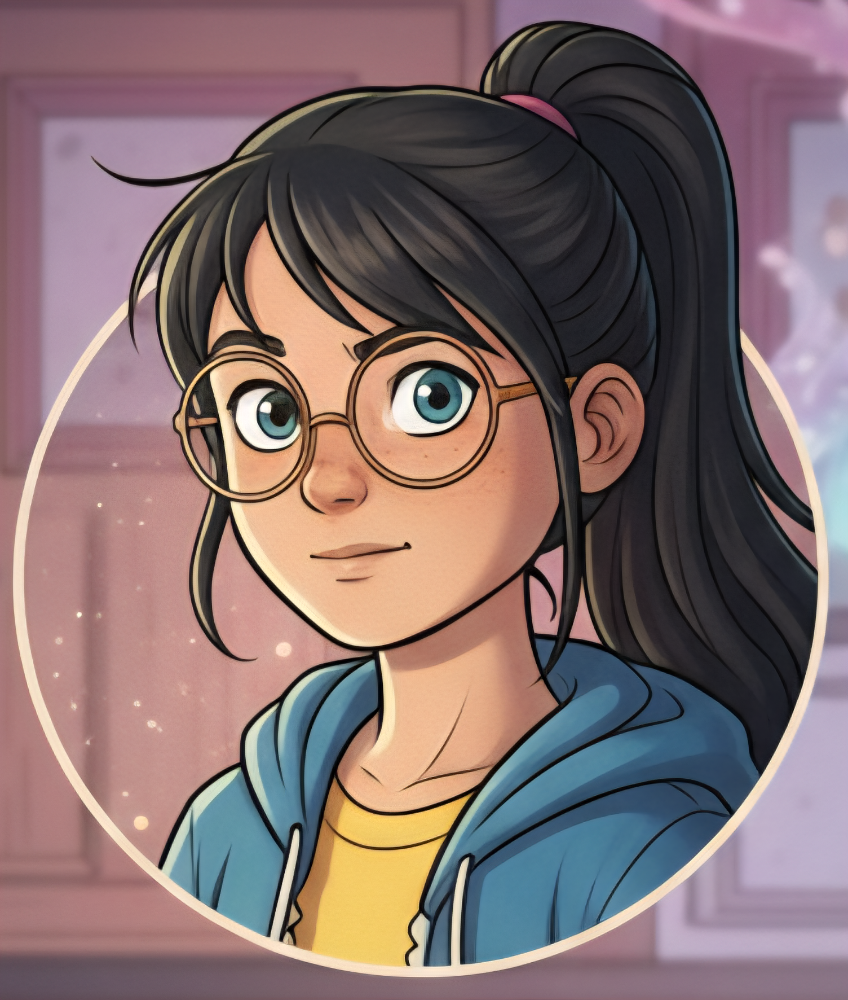

율 (Yul)
11 YEARS OLD 이성의 검, 염력의 마스터Character Profile
언제나 세상을 분석하고 모든 것을 머리로 이해하려는 똑똑한 소녀. 갑작스럽게 휘말린 마법의 세계를 처음에는 믿지 못하고, 말도 안 되는 현상 앞에서 혼란스러워합니다. 하지만 동생과 요정들을 지켜야 한다는 책임감이 싹트면서, 자신의 마음을 조금씩 열기 시작합니다.
그녀의 성장은 이해할 수 없는 것을 받아들이는 과정입니다. 처음에는 검과 활을 다루는 법을 머리로만 접근하려 하지만, 점차 마음으로 느끼고 본능을 믿는 법을 배웁니다.
Special Abilities
Psychokinesis (염력): 그녀의 잠재 능력인 염력은 세상 모든 것에 새로운 질서를 부여하고 싶어하는 그녀의 바람이 현실이 된 것입니다. 처음에는 작은 돌멩이를 띄우는 수준이었지만, 동생을 구하려는 간절한 마음이 폭발하며 주변의 모든 것을 제어하는 강력한 힘으로 각성합니다.
"말도 안 돼. 이런 건 본 적 없어.
하지만 극복하고 말겠어."
하지만 극복하고 말겠어."